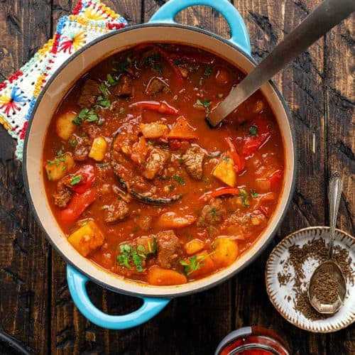

Hungarian Goulash

Description
Hungarian goulash is a hearty stew with chunks of beef, potatoes, and a hearty Hungarian paprika flavored
tomato sauce, cooked low and slow until tender. A great everyday meal that tastes amazing and isn't hard to
make.
Ingredients
- 4 pounds chuck roast, cut into 1-inch cubes
- 1 1/2 teaspoons Kosher salt
- 1/2 teaspoon coarse ground black pepper
- 3 tablespoons Hungarian sweet paprika
- 1/3 cup vegetable oil
- 1 yellow onions, chopped
- 2 cloves garlic, minced
- 4 medium yukon potatoes, cut into 2-inch cubes
- 4 medium carrots, peeled and cut into 2-inch cubes
- 6 ounces tomato paste
- 1 tablespoon Worcestershire sauce
- 2 tablespoons brown sugar, packed
- 1 tablespoon red wine vinegar
- 3 cups beef broth
Steps
- Pre-heat oven to 325 F
- Ad the salt, pepper, and paprika to the chunks of beef, coating them well.
- Add oil to your large dutch oven on medium-high heat and brown beef cubes well on all sides, about 5-6
minutes then remove them from the pan.
- Lower the heat to medium and add the onions and garlic to the pot and cook until translucent, about 3-4
minutes.
- Add in the potatoes, carrots, tomato paste, Worcestershire sauce, brown sugar, red wine vinegar, beef
broth, and seared beef cubes (along with any juices on the plate), stirring well.
- Cover and put into the oven for 2 hours or until the meat is fork tender.
- Pull from oven and serve hot.